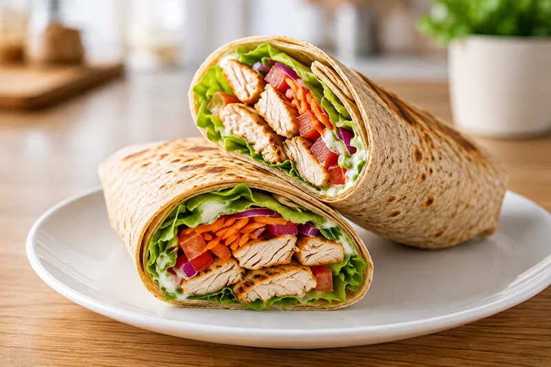

Receta saludable
Wrap integral de pollo y verduras
El wrap integral de pollo y verduras combina proteína magra, verduras frescas y una tortilla integral en una receta equilibrada, rápida y muy cómoda para llevar o disfrutar en casa.
Ingredientes
- 2 tortillas integrales
- 250 g de pechuga de pollo
- 4 hojas de lechuga
- 1 tomate
- 1 zanahoria rallada
- 1/4 de cebolla morada
- 40 g de queso crema ligero o yogur griego natural
- 1 cucharadita de aceite de oliva virgen extra
- Sal
- Pimienta negra
- Pimentón dulce
Preparación
- Salpimenta la pechuga de pollo y añade una pizca de pimentón dulce.
- Cocínala a la plancha hasta que esté dorada y córtala en tiras.
- Lava y corta la lechuga, el tomate y la cebolla.
- Calienta ligeramente las tortillas integrales.
- Extiende una fina capa de queso crema ligero o yogur griego sobre cada tortilla.
- Reparte el pollo y las verduras de forma uniforme.
- Enrolla los wraps presionando ligeramente para que queden bien cerrados.
- Córtalos por la mitad y sirve inmediatamente.
Consejo práctico
Si vas a llevarlo fuera de casa, añade el tomate justo antes de comerlo para que la tortilla conserve mejor su textura y no se humedezca.